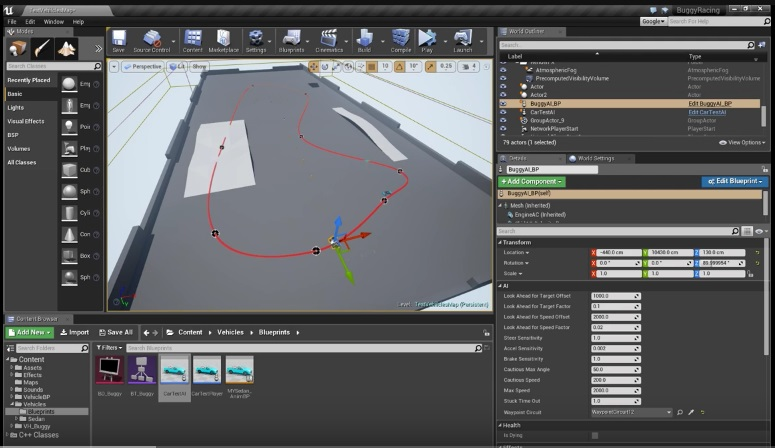

Moving Along a Curve
For the car AI to navigate the maps effectively, I implemented a system where points are added around the track to create spline paths for AI vehicles to follow.

To add realism, I integrated Perlin Noise into the car’s movement along the path, simulating natural steering adjustments rather than a rigid, robotic trajectory.
Avoidance System
The AI cars are capable of avoiding both the player and other AI vehicles. When a potential crash is detected via raycasts and trajectory prediction, the car calculates an offset to steer away and prevent collisions.
In-world VR Perspective
As a VR-first experience, the UI is integrated directly into the car’s dashboard rather than being a 2D overlay, providing natural spatial feedback for the driver.